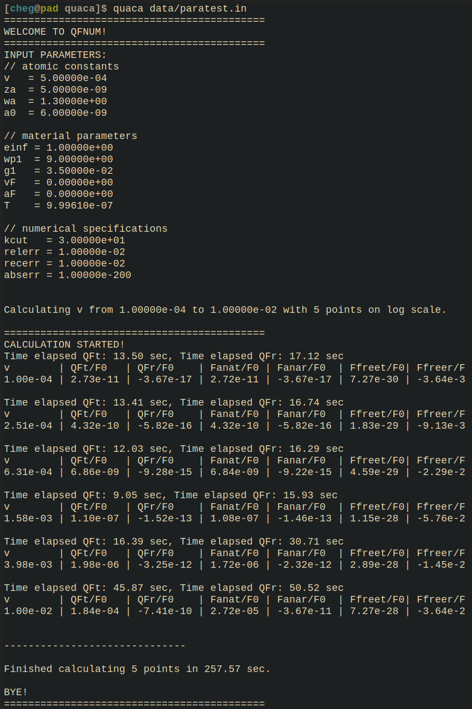

Usage¶
After installing Quaca type into the command line:
$ quaca INPUTFILE
to start your quantum friction calculation.
So if you have an input file called params.in in a folder called data you would for example type into the terminal:
$ quaca data/params.in
QuaCa then calculates its stuff and puts the values into an according .out file.
Input file¶
A sample .in file is depicted here
# atomic constants
v 5E-4 # in c
za 5E-9 # in nm
muquest 1 # if 1, the internal bath is included
gamMu 1E-1 # in eV
wa 1.3E0 # in eV
a0 6E-9
# material parameters
einf 1.
wp1 9. # in eV
g1 0.035E0 # in eV
T 1E-6 # in K
# numerical specifications
kcut 30.
relerr 1E-2
recerr 1E-2
abserr 1e-200
# Range
runvar v
start 1E-4
stop 1E-2
steps 5
scale log
Output¶
Below is a sample output for the above input file in the terminal
(notice that the picture hasn’t been cut properly on the right edge and that the value for T is different, because QuaCa does not actually print out T, but beta = 1/(kB*T) here)
QuaCa always prints out the parameters from the input file (to double check if you are watching the calculation). Then it prints out the time it has taken to calculate the point and also the values with various analytic quantities.
Besides that QuaCa generates a .out file with the numeric content at the bottom.
For the above input file it looks like this:
1.0000000000e-04, 2.7253696679e-11, -3.6690445647e-17, 2.7248100336e-11, -3.6692371561e-17, 7.2707053205e-30, -3.6353526602e-30
2.5118864315e-04, 4.3208924575e-10, -5.8212975633e-16, 4.3185328730e-10, -5.8153489903e-16, 1.8263186042e-29, -9.1315930210e-30
6.3095734448e-04, 6.8636939727e-09, -9.2765530521e-15, 6.8444133519e-09, -9.2167070264e-15, 4.5875049215e-29, -2.2937524608e-29
1.5848931925e-03, 1.1038064592e-07, -1.5229891203e-13, 1.0847664128e-07, -1.4607496223e-13, 1.1523291367e-28, -5.7616456834e-29
3.9810717055e-03, 1.9761487063e-06, -3.2496197205e-12, 1.7192389030e-06, -2.3151321323e-12, 2.8945199231e-28, -1.4472599615e-28
1.0000000000e-02, 1.8423977098e-04, -7.4062846006e-10, 2.7248100336e-05, -3.6692371561e-11, 7.2707053205e-28, -3.6353526602e-28
Performance¶
On the notebooks of the developers (i.e. Thinkpad X1 Carbon 3rd Gen, Dell XPS 13) the calculation of a point (i.e. QFt and QFr) in the small velocity regime usually never takes longer than a minute, for relativistic speeds it can take up to two or three minutes per data point.
Analytics¶
-
double F0(void *p) Given a parameter struct this function computes the normalization constant
\[F_0 = -3 \frac{\omega_{\mathrm{sp}}^5 \alpha_0}{2 \pi \varepsilon_0}\]
-
double Fanat(void *p) Given a parameter struct this function computes the analytic limit of the translational contribution to quantum friction for small velocities of the atom. Notice that there are different results for different \(\mu\)!
-
double Fanar(void *p) Given a parameter struct this function computes the analytic limit of the rolling contribution to quantum friction for small velocities of the atom.
-
double Ffreet(void *p)
-
double Ffreer(void *p)